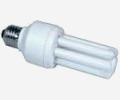
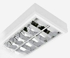
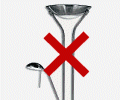
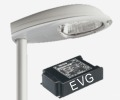
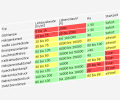
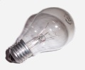

| Themen und Tipps |
| Allgemeines |
| Elektrizit�t |
| Heizung & Sanit�r |
| Mobilit�t |
| Fakten: Energie |
| Fakten: Klima |
| Fakten: Umwelt |
Erleuchtung statt Erw�rmung - effiziente Beleuchtungen
K�nstliches Licht ist aus unserem Alltag nicht mehr wegzudenken, es wird nahezu �berall ben�tigt.
Doch leider wird bei Beleuchtungsanlagen sehr viel Energie unsinnig verschwendet, wenn auf veraltete Technik (Beispiel Gl�hlampen) oder auf "angeblich sparsame und effiziente" Technik (Beispiel Halogenlampen) gesetzt wird.
Viele Leute meinen, dass das ersetzen von Gl�hlampen durch Halogenlampen eine Modernisierung w�re - die auch zur Einsparung von Energie f�hren w�rde. Das ist jedoch Unsinn!
Im Grunde sind Halogenlampen auch nur Gl�hlampen - es wurden lediglich Halogene beigemischt, die den Wirkungsgrad minimal erh�hen.
Es gibt jedoch weitaus sparsamere, effizientere Leuchtmittel auf dem Markt, u.a. Leuchtstofflampen, Energiesparlampen und Leuchtdioden.
Waren Leuchtdioden (LEDs) bisher nur für kleinere Beleuchtungsaufgaben (z.B. in Taschenlampen oder Bremsleuchten an Fahrzeugen) sehr gut geeignet, so werden diese in der letzten Zeit auch immer mehr zur Allgemeinbeleuchtung eingesetzt.
| TIPP Sagt der Heizung namens Gl�hlampe den Kampf an! | |
|
Bei Gl�hlampen wird nur 5% bis 10% in Licht umgewandelt -
der gesamte Rest von 90% bis 95% geht als nutzlose W�rme an die
Umgebung verloren! Wer an dieser Stelle denkt, Halogenlampen seien um einiges effizienter, der irrt. Auch diese eignen sich eher f�r Heiz- als f�r Beleuchtungszwecke, liegt ihr Wirkungsgrad doch nur geringf�gig �ber dem von Gl�hlampen (ca. 15% wird in Licht umgewandelt). Daher sollte man diese "Heizungen" m�glichst fl�chendeckend durch Energiesparlampen (ESL) ersetzen, da ESL wesentlich effizienter arbeiten und 30% bis 40% in Licht umwandeln. Aber bitte nicht mit dem Sparen �bertreiben, indem man billige Energiesparlampen (unter 2 Euro) kauft! Man tut sich damit keinen Gefallen, da diese Billiglampen nur sehr selten die angegebene Lebensdauer erreichen, zudem ist ihr Lichtspektrum oft nicht zufriedenstellend (z.B. Rotstich). Hochwertige Energiesparlampen �berstehen h�ufiges An-/Ausschalten hingegen sehr gut und ihr Lichtspektrum ist angenehm. Auch aus Brandschutzgr�nden sollte auf Gl�hlampen und Halogenlampen verzichtet werden - denn diese werden im Betrieb sehr hei� (gemessen: �ber 120 �C auf der Glasoberfl�che)! F�r B�ror�ume, Gesch�fte, Keller usw. sollten auf jeden Fall Leuchtstofflampen verwendet werden, da deren Wirkungsgrade nochmals ein St�ck besser sind. Hochwertige ESL gibt es u.a. von Philips, Osram, Radium oder Megaman Preis f�r eine gute Energiesparlampe: ca. 3 bis 10 Euro |
 |
| auf Unterseite weiterlesen ... | |
| TIPP Hocheffiziente Beleuchtung mit Leuchtstofflampen | |
|
Fast �berall in B�ros, Gesch�ften oder Hallen werden sie
eingesetzt: Leuchtstofflampen Doch vielfach sind die Beleuchtungsanlagen veraltet und sehr ineffizient. Wie eine effiziente Beleuchtung auszusehen hat, erf�hrt ihr unter "weitere Informationen". |
 |
| auf Unterseite weiterlesen ... | |
| TIPP gezielt beleuchten - weshalb un�tig Licht verlieren? | |
|
Es gibt viele Leuchten, bei denen ich am Verstand der
Konstrukteure zweifeln muss. Das Wort Effizienz ist diesen Menschen wohl ein Fremdwort. Als Kunde kann man aber etwas dagegen tun, indem man solche Produkte ganz einfach meidet! Welche Leuchten man verwenden sollte und welche nicht, findet ihr auf der Unterseite. |
 |
| auf Unterseite weiterlesen ... | |
| TIPP Stra�en und Industrieanlagen effizient beleuchten | |
|
Viele Stra�en, Wege und Industrieanlagen werden auf Grund
veralteter Beleuchtungsanlagen
ineffizient beleuchtet. Folglich entstehen unn�tig hohe Energiekosten. Mit modernen Beleuchtungsanlagen ist es m�glich, die Energiekosten zu halbieren! Zudem sterben viele Insekten an den Quecksilberdampflampen. |
 |
| auf Unterseite weiterlesen ... | |
| INFO Welche Lampentypen gibt es �berhaupt? | |
|
Hier findest du eine Vergleichstabelle aller �blichen
Leuchtmittel. In der Tabelle wird die Lichtausbeute, die Lebensdauer, die Farbwiedergabe und die Startzeit ber�cksichtigt. Unterhalb der Tabelle werden die auftretenden Begriffe und die Leuchtmittel erkl�rt. |
 |
| auf Unterseite weiterlesen ... | |
| INFO Tabellen typischer Leuchtmittel, sortiert nach Lichtmenge | |
|
Hier werden konkrete Leistungsangaben von handels�blichen
Leuchtmitteln tabellarisch aufgelistet, die bzgl. ihrer
Helligkeit direkt miteinander verglichen werden k�nnen. Zum Beispiel lassen sich alternative Leuchtmittel sehr einfach und flexibel ausw�hlen. Die erste Tabelle beinhaltet haushalts�bliche, die zweite industrielle Leuchtmittel. |
 |
| auf Unterseite weiterlesen ... | |
| INFO Wieso kosten Energiespar- und Leuchtstofflampen mehr als Gl�hbirnen? | |
|
Der Herstellungsprozess von Leuchtstofflampen (Energiesparlampen
geh�ren auch dazu) ist viel aufw�ndiger und teurer als der von
Gl�hlampen, da Leuchtstofflampen eine Elektronik (oder eine
magnetische Drossel) zum Z�nden des Gases ben�tigen. Vergleicht man jedoch die Kosten von Gl�hlampen und Energiespar-/Leuchtstofflampen �ber die gesamte Lebensdauer, so ist eine Energiespar-/Leuchtstofflampe um einiges g�nstiger! Rechenbeispiele findet man auf der Unterseite. |
|
| auf Unterseite weiterlesen ... | |
| INFO Ich habe geh�rt, dass Energiesparlampen beim Einschalten und kurze Zeit danach mehr Strom ben�tigen. Stimmt das? | |
|
Nein, nur in einem Sekundenbruchteil im Einschaltmoment ist der
Strom auf Grund der kalten Kathoden h�her. Danach ist der
Energiebedarf einer Energiesparlampe f�r eine kurze Zeit sogar
niedriger! Es dauert n�mlich eine Weile, bis die Lampe ihre Leistung "hochgefahren" hat. Dies erkennt man daran, dass die Lampe erst nach einigen Minuten mit voller Lichtleistung brennt. Wer es nicht glaubt, sollte sich ein Energiekostenmessger�t oder ein Amperemeter davorschalten und es selbst nachpr�fen. |
|
| INFO Verk�rzt h�ufiges Schalten die Lebensdauer von Lampen? | |
|
Ja, bei Gl�hlampen auf jeden Fall: Befindet sich eine Gl�hlampe im kalten, ausgeschalteten Zustand und wird nun eingeschaltet, so flie�t schlagartig ein hoher Einschaltstrom. Danach erw�rmt sich die Lampe und der Strom wird geringer. Im Laufe des Betriebes nutzt sich der Wolframfaden immer mehr und mehr ab, d.h. er wird mit der Zeit d�nner. Schaltet man nun eine Lampe h�ufig ein und aus, so ist die Wahrscheinlichkeit gro�, dass die Gl�hwendel auf Grund des hohen Einschaltstromes durchbrennt. Bei Energiesparlampen oder Leuchstofflampen kommt es darauf an, wie die Vorschaltger�te konstruiert sind. N�heres dazu unter Informationen zu Energiesparlampen Siehe auch "Wieso gehen Gl�hlampen meistens beim Einschalten kaputt?" |
|
| INFO Wieso gehen Gl�hlampen meistens beim Einschalten kaputt? | |
|
Dieses Ph�nomen erkl�re ich euch am besten an einem einfachen
Beispiel: Eine handels�bliche 60 Watt Gl�hbirne hat im kalten, ausgeschalteten Zustand einen Widerstand von ca. 53 Ohm. Schaltet man diese Lampe nun ein, so flie�t im Einschaltmoment kurzzeitig ein Strom von: 230 Volt / 53 Ohm = 4,3 Ampere! Ist die Gl�hlampe auf Betriebstemperatur, so ist ihr Widerstand viel h�her (ca. 880 Ohm) und der Strom betr�gt nur noch: 60 Watt / 230 Volt = 0,26 Ampere. Der Strom im Einschaltmoment ist also ca. 17 mal so gro� wie w�hrend des Betriebes! Ist der Gl�hdraht schon etwas �lter oder von schlechter Qualit�t, so kann der Einschaltstrom die Gl�hwendeln schnell zerst�ren. L�sen kann man dieses Problem durch Dimmer mit Softstartfunktion, da hiermit die Lampen langsam "hochgefahren" werden und die Gl�hlampen damit eine l�ngere Lebensdauer erreichen. Aus Gr�nden der h�heren Energie- und Geldersparnis und Lebensdauer sollte man das Geld besser in Energiesparlampen investieren. |
|
| INFO Verlauf der Lichtst�rke beim Einschalten einer Leuchtstofflampe | |
|
Vielfach wird als Argument gegen den Einsatz von
Leuchtstofflampen angef�hrt, dass diese erst nach mehreren
Minuten gen�gend Licht liefern w�rden und daher nur bedingt
verwendet werden k�nnen. Dieses Vorurteul habe ich im folgenden mit eigenen Messungen genauer untersucht. |
|
| auf Unterseite weiterlesen ... | |
| INFO Weshalb keine Wirkungsgrade in Prozent bei Leuchtmitteln? | |
|
Es w�re im Prinzip so einfach: Eine Prozentangabe von 0%..100%
auf Leuchtmitteln k�nnte angeben, wieviel der aufgenommmenen
elektrischen Energie in sichtbares Licht umgewandelt wird. Je
h�her die Zahl, desto besser die Lampe. Leider ist eine Prozentangabe bei Lichtquellen nicht m�glich. Man k�nnte im Prinzip die Effizienz im "sichtbaren Bereich" (380..780nm) angeben, d.h. wieviel elektrische Energie in Strahlung zwischen 380-780nm umgewandelt wird. Zus�tzlich muss jedoch die selektive Hell-Empfindlichkeit des menschlichen Auges beachtet werden (V(lambda)-Kurve), d.h. das Auge nimmt Farben unterschiedlich stark wahr. Diese Energiewichtungsfunktion reduziert die vom Menschen wahrgenommene Strahlung einer "ideal" weissen Strahlungsquelle (konstantes Spektrum im Bereich von 380 - 780nm) bereit auf ein Viertel des Energieinhaltes! Lichtquellen, die den h�chsten Empfindlichkeitsbereich des menschlichen Auges bedienen (gr�n 555nm), erscheinen ausserdem als "farbunecht". Ingesamt hei�t dies also, dass die Strahlungsausbeuten von akzeptablen weissen Lichtquellen nur in kleinen Prozentbereichen liegen k�nnen. Aus diesen Gr�nden wird der Wirkungsgrad �blicherweise mit Lumen pro Watt (lm/W) angegeben. Diese Angabe mag recht abstrakt wirken, ist jedoch f�r die visuelle Nutzbarkeit von Lichtquellen und deren Vergleichbarkeit unerl�sslich. Denn das Lumen ist die der menschlichen Augenempfindlichkeit angepasste effektive Strahlungsleistung (Watt) und steht damit im direkten Vergleich zur elektrisch aufgewandten Leistung bzw. Energie. Theoretisch w�re eine Lichtausbeute von 683 lm/W m�glich, jedoch nur �ber eine monochromatische gr�ne Emissionslinie bei 555nm. Denn hier befindet sich die maximale Hellempfindlichkeit des menschlichen Auges. Es versteht sich daher von selbst, dass weisse Lichtquellen mit hoher Farbwiedergabe (Spektralbereiche blau � gr�n � rot ausreichend vorhanden) diesen Wert niemals erreichen k�nnen. Die h�chsten Lichtausbeuten von ca. 200 lm/W werden derzeit mit Niederdruck-Natriumdampflampen erreicht. |
|
| INFO Spart man durch das dimmen von Leuchtmitteln Energie? | |
|
Sobald man eine Lampe dimmt, also die Leistung herunterregelt, wird auch Energie eingespart. Der Dimmer selbst ben�tigt daf�r nur sehr wenig Energie. Jedoch wird der Wirkungsgrad (Verh�ltnis von aufgenommener Energie zu Nutzenergie) von Leuchtmitteln durch das Dimmen verschlechtert. Dimmt man z.B. eine Lampe auf 50% ihrer vollen Leistung herunter, so gibt diese dann nur noch ca. 25% der vollen Lichtleistung ab. Gr��ere Lichtanlagen sollten aus diesem Grund nicht nur �ber Dimmer geregelt werden. Besser ist es, wenn man mehrere Lichtgruppen installiert, die je nach Helligkeitsbedarf an- oder ausgeschaltet werden. Kombiniert man diese zus�tzlich mit Dimmern, so erh�lt man optimalste Lichtverh�ltnisse und h�chste Einspareffekte. Achtung: Die meisten Energiesparlampen k�nnen - trotz elektronischer Vorschaltger�te - nicht gedimmt werden! Man unterscheidet zwischen Phasenanschnitt- und Phasenabschnittdimmern:
Sogar Leuchtstofflampen k�nnen gedimmt werden. Dies kann jedoch nur �ber elektronische Vorschaltger�te mit integrierter Dimmfunktion realisiert werden. Diese k�nnen z.B. �ber eine 1-10 Volt Schnittstelle, DALI (Digital adressable lightning inferface) oder EIB (European installation bus) in der Helligkeit geregelt werden. Bei DALI und EIB sind �brigens noch viel komplexere Lichtsteuerungen m�glich. |

|
| Suchen... |
| Community |
| Links |
|
|
| Allgemeines |
| Homepage weiterempfehlen an ... |